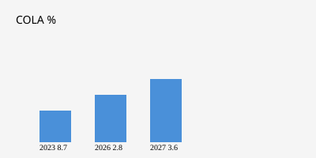

United States · Social Security · 14 October 2026
Social Security announces 3.6 percent COLA for 2027

What is agreed across desks
The Social Security Administration issued a press release on 14 October 2026 announcing a 3.6 percent cost-of-living adjustment for 2027. The increase applies to Old-Age, Survivors, and Disability Insurance benefits and to Supplemental Security Income. Nearly 72 million Social Security beneficiaries will see the adjustment in their January 2027 payments. About 7.3 million SSI recipients will see it beginning 31 December 2026. The average monthly increase for a retired worker is stated as approximately $75, bringing the average retired-worker benefit to roughly $2,170. The maximum taxable earnings for Social Security rise from $184,500 in 2026 to $192,300 in 2027. These figures appear in the SSA press release and the accompanying 2027 COLA Fact Sheet.
The COLA is calculated by statute from the Consumer Price Index for Urban Wage Earners and Clerical Workers (CPI-W). The Bureau of Labor Statistics supplies the index values. The third-quarter average for 2026 is compared with the third-quarter average for 2025. The resulting percentage, rounded to the nearest tenth, becomes the COLA. SSA reported that the 2026 third-quarter average produced the 3.6 percent figure. This is the largest COLA since the 8.7 percent adjustment for 2023. The 2026 COLA was 2.8 percent.
What is only a quote
Commissioner Frank J. Bisignano said in the release: “Social Security will implement this cost-of-living adjustment for 76 million Americans, giving them greater financial stability. Under President Donald J. Trump, Social Security is delivering better, faster, higher-quality service for the American people.” The sentence linking the COLA to improved service under a particular administration is a statement by the commissioner. Independent metrics of service quality, wait times, or accuracy are not part of the COLA announcement itself. Advocacy groups have stated that the increase will not fully offset rising costs for some households; those statements are claims by the groups, not findings of the SSA calculation.
Mechanism and history
Automatic COLAs began in 1975 after Congress amended the Social Security Act to tie benefits to inflation measured by the CPI-W. Before that, increases required separate legislation. The index used is specifically the CPI-W, not the broader CPI-U that is more commonly cited in monthly inflation reports. CPI-W weights the spending patterns of urban wage earners and clerical workers. Food, shelter, energy, and medical care all enter the index, though with different relative importance than in the CPI-U. Because the COLA looks at a three-month average rather than a single month, a large September spike in energy prices is smoothed with July and August readings. The September CPI-U of 3.7 percent year-over-year, driven largely by gasoline, is a different series and a different time window from the COLA calculation, though the two are related through shared energy-price movements.
Medicare Part B premiums are deducted from most Social Security checks. The 2027 Part B premium has not yet been announced. Historical pattern shows that a portion of any COLA is often absorbed by higher premiums. The exact net increase for an individual therefore depends on that premium, on any income-related monthly adjustment amount, and on whether the person receives both Social Security and SSI. Recipients can view their new benefit amount in their my Social Security account beginning in late November, according to the agency.
What the story is not
The 3.6 percent figure is not a discretionary decision by the president or Congress. It is the arithmetic result of the statutory formula applied to published CPI-W values. It is not a projection of future inflation, nor a guarantee that real purchasing power will rise. It does not resolve debates about the long-term solvency of the trust funds. Those debates rest on demographic projections, revenue estimates, and spending assumptions that are outside the scope of the annual COLA announcement.

Source articles and scores
| Outlet | Headline | T | N | C |
|---|---|---|---|---|
| SSA | Social Security Announces 3.6 Percent Benefit Increase for 2027 | 100 | 0 | 100 |
| SSA | 2027 Cost-of-Living Adjustment (COLA) Fact Sheet | 100 | 0 | 100 |
| AP | Social Security recipients to get 3.6% cost of living boost | 97 | 0 | 99 |
Image credit: Wikimedia Commons File:US-SocialSecurityAdmin-Seal.svg (public domain US government work). Local fallback SVG committed under images/.